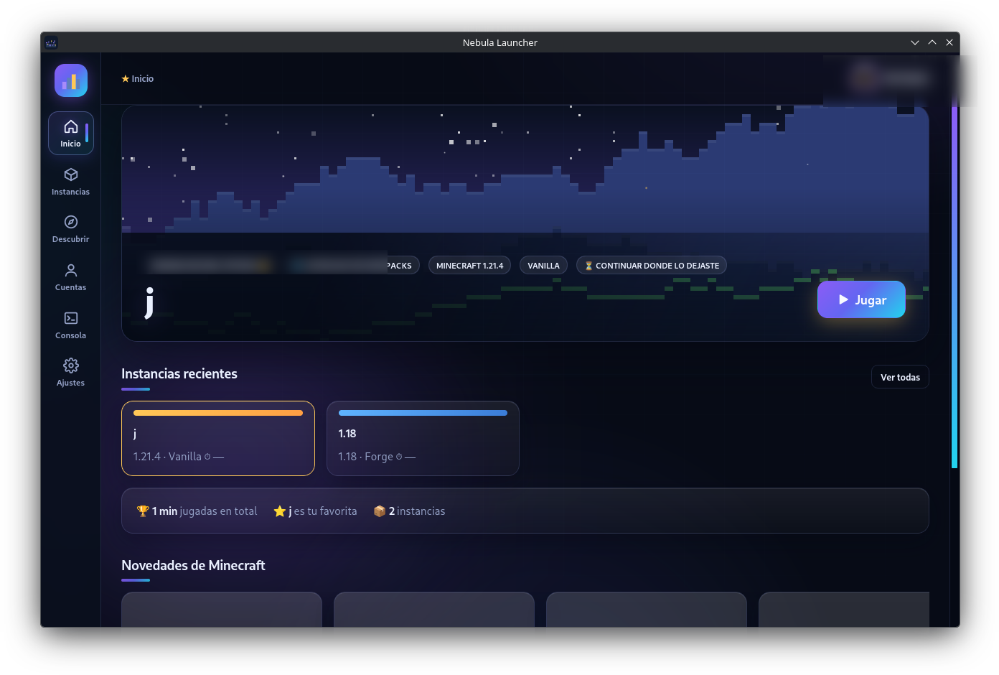
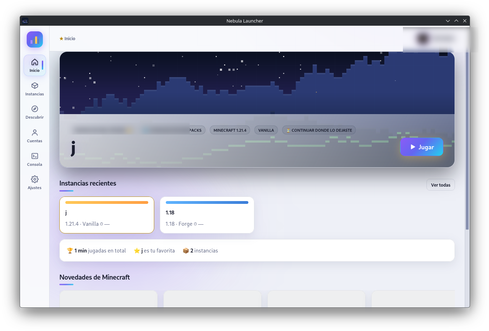
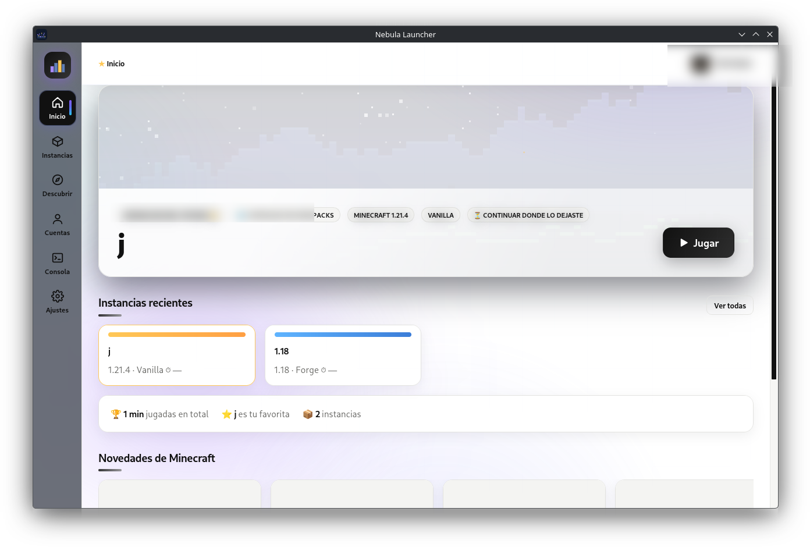
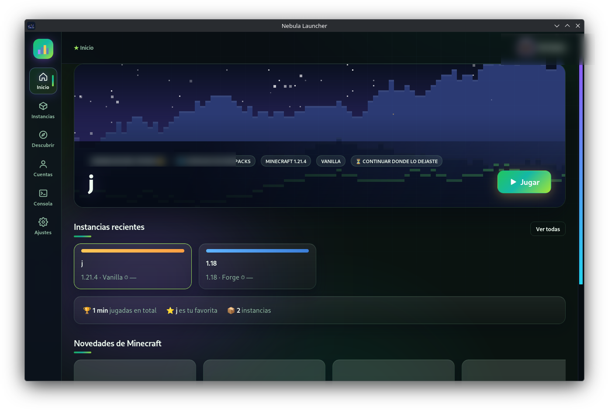
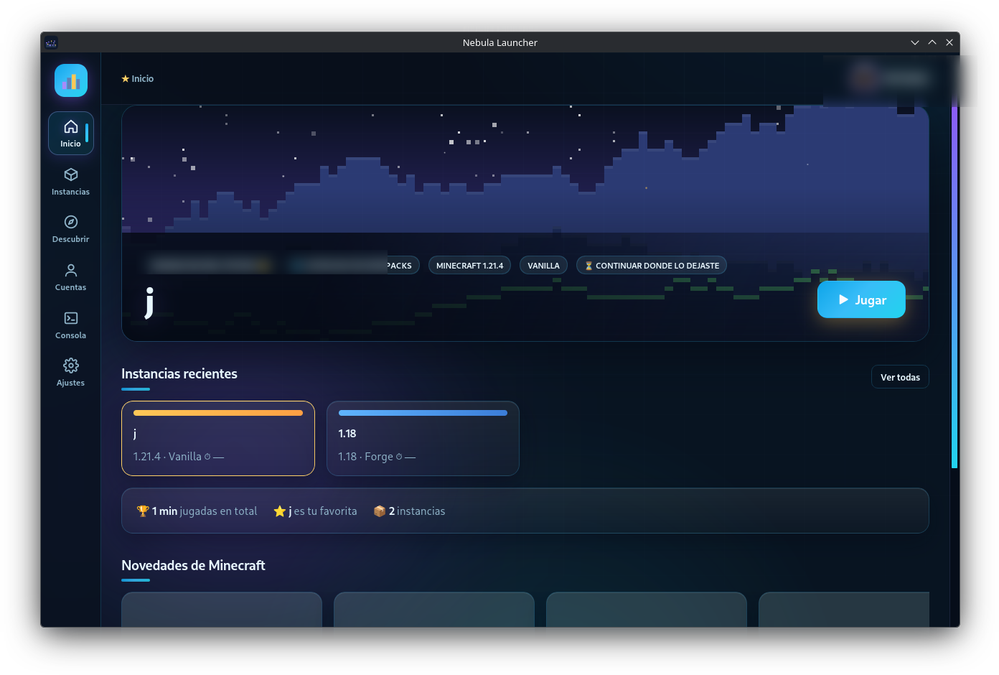
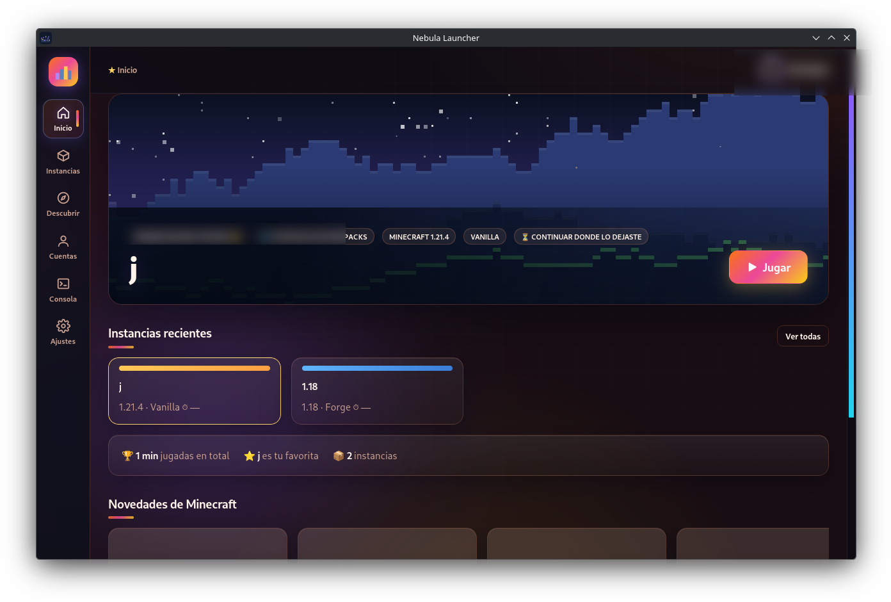

El lanzador de Minecraft
como debería ser
Ligero (~4 MB de instalador), veloz y elegante. Instancias, Modrinth, skins, backups automáticos y tres interfaces. Código abierto para Windows y Linux.







Todo lo que necesitas
Las funciones de los grandes lanzadores, sin la basura.
Vanilla, Fabric, Quilt, Forge y NeoForge. Memoria, Java y argumentos por instancia, con presets de JVM.
Mods, modpacks, texturas y shaders con dependencias automáticas, actualizaciones y botón "Optimizar".
Armario con vista 3D y galería online paginada con buscador. Las skins sin conexión se ven de verdad en el juego — también en Windows.
Copias de tus mundos cada pocos minutos mientras juegas, con rotación. Se acabó perder tu casa.
MOTD, jugadores y latencia en vivo, más lista de servidores populares y entrada rápida (quickPlay).
Del Aurora púrpura al Bosque, Océano y Atardecer. Con nebulosa viva de fondo, tarjetas en cascada y botón Jugar con pulso.
Detecta el Java que necesita cada versión, lo trae oficial (Temurin) en 1 clic y escanea los que ya tengas. Chip de estado por instancia.
Catálogo directo desde el inicio: eliges portada y el launcher arma la instancia completa con mods, config y Java.
Mientras juegas tu perfil de Discord muestra tu instancia, versión y tiempo de partida. Integrado de fábrica.
Instaladores nativos para cada sistema y auto-actualización con un clic en Windows y macOS (.dmg universal).
Instalar en 3 pasos
Menos de dos minutos, prometido.
El botón de arriba detecta tu sistema: .exe/.msi en Windows, .AppImage/.deb/.rpm en Linux y .dmg universal en macOS.
En Windows doble clic y siguiente-siguiente. En Linux dale permiso de ejecución y ábrelo (o instálalo con tu gestor).
Crea una instancia de tu versión favorita, entra con tu cuenta Microsoft (o perfil offline) y darle a Jugar.
Vistazo al interior
Nebulosa animada de fondo, tarjetas que entran deslizándose y el botón Jugar pulsando — elige tu tema y toda la interfaz cambia de outfit.

Comparativa honesta
En qué nos diferenciamos de lo que ya conoces.
| Nebula | Launchers "premium" | El oficial | |
|---|---|---|---|
| Instalador | ~3-4 MB | 100-200 MB | ~5 MB |
| Anuncios / promociones | Nunca | A veces | No |
| Código abierto (GPL-3.0) | Sí | No | No |
| Buscador Modrinth | Incluido | A veces extra | No |
| Backups mientras juegas | Incluido | No | No |
| Verificación SHA-1 del juego | Paso estándar | No | Sí |
| Auto-actualización con 1 clic | Windows + macOS | Sí | A veces |
| Java automático por versión | Instala ofic. + escaneo | A veces | No |
Novedades recientes
Las tres últimas versiones, directas de GitHub.
Cargando novedades…
Preguntas
Lo que todo el mundo pregunta antes de instalar.
¿Es gratis? ¿De verdad de verdad?
Sí. Código abierto con licencia GPL-3.0, sin anuncios, sin cuentas obligatorias, sin "versión premium".
¿Necesito Minecraft comprado?
Puedes jugar con cuenta Microsoft si lo has comprado (el launcher lo verifica contra los servidores de Mojang), o crear un perfil offline para probar sin conexión.
¿Es seguro?
Sí: el código entero es visible en GitHub, los archivos del juego se verifican con SHA-1 contra los servidores de Mojang y nada se instala fuera de su carpeta de datos.
¿Hay versión para Mac?
Sí: descarga el .dmg universal (funciona en Apple Silicon e Intel). Como no está firmado con cuenta de desarrollador de pago, en la primera apertura macOS puede avisar: clic derecho sobre la app → Abrir, y listo.
¿Es actualizable sin volver a instalar?
Sí: cuando hay versión nueva aparece un aviso pequeño dentro del launcher; en Windows y macOS se descarga e instala con un clic, sin pop-ups molestos.
¿Y si encuentro un bug?
Abre un issue en GitHub o coméntalo en GitHub — hay versiones nuevas con frecuencia y los reportes se atienden.
¿A qué esperas?
Tu primera instancia está a un clic.
⬇️ Descargar la última versión